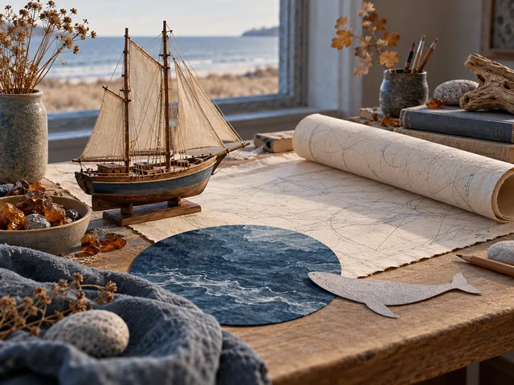
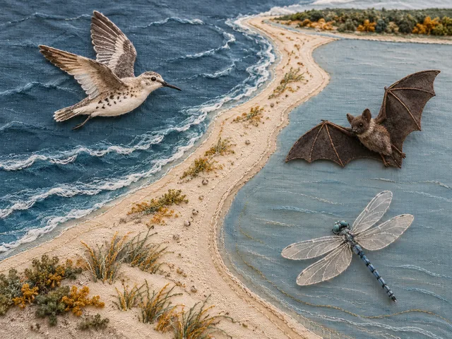
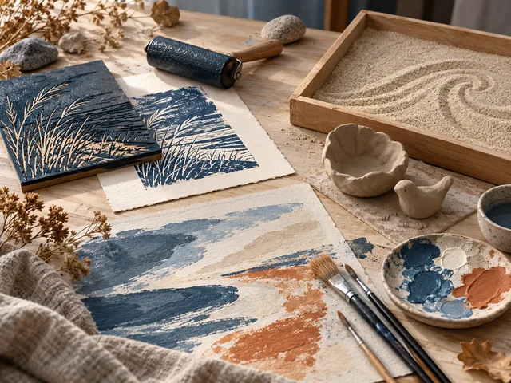
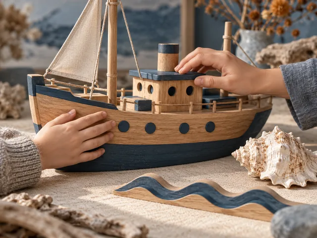
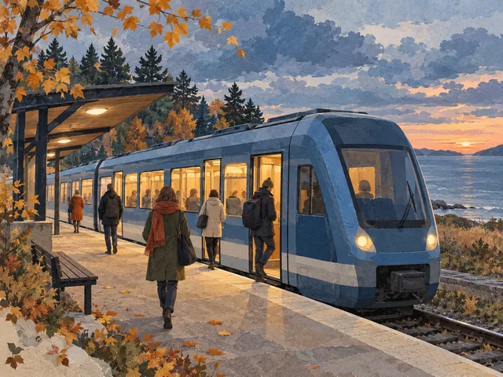
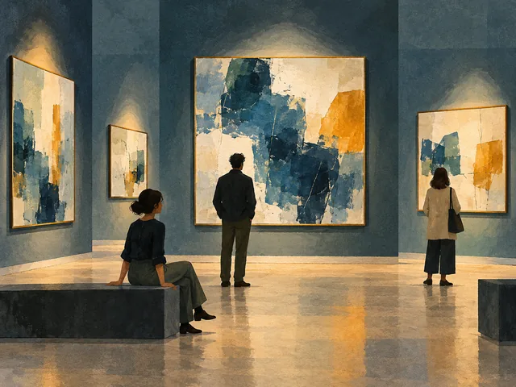
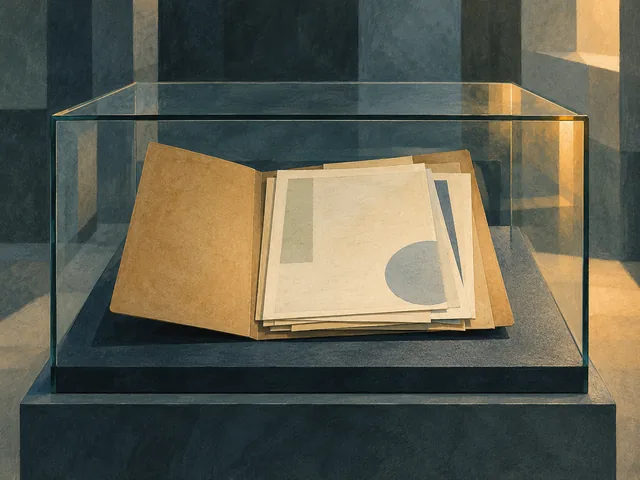
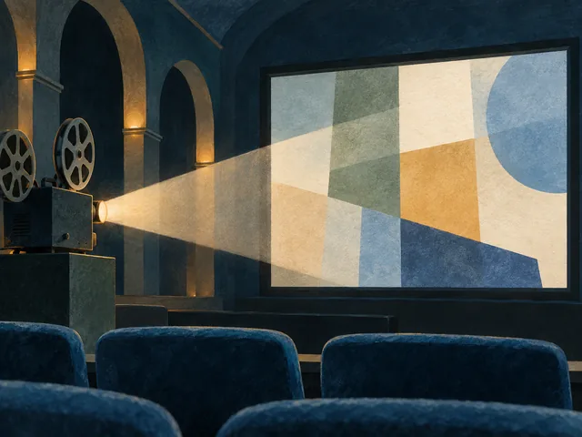
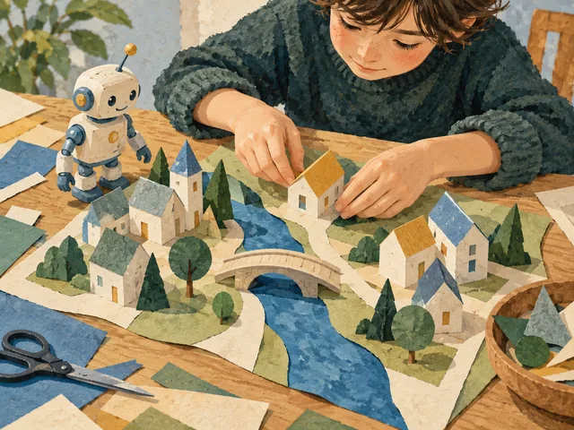
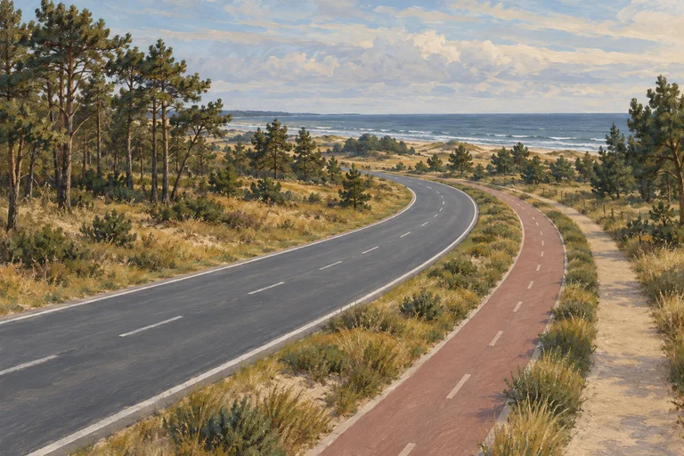

Главная / Новости на Балтике Редакция GoDune.ru
Новости на Балтике Что меняется в Калининградской области: документы, инфраструктура и полезные решения для поездки.
Редакционная иллюстрация GoDune, созданная с помощью ИИ. 28 октября 2026 · Редакция GoDune.ru
Выставка о Всеволоде и Зое Остен открылась 23 октября. В ней собраны письма, книги, фотографии, рисунки и картины из семейного архива; 12+.
Читать новость → 
Редакционная иллюстрация GoDune, созданная с помощью ИИ. 28 октября 2026 · Редакция GoDune.ru
В плане — 20 стационарных и восемь передвижных выставок. Среди площадок названы Королевские и Фридрихсбургские ворота, а также Светлогорск.
Читать новость → 
Редакционная иллюстрация GoDune, созданная с помощью ИИ. 28 октября 2026 · Редакция GoDune.ru
Нацпарк рассказал о трёх занятиях 20–22 октября для воспитанников школы-интерната в Сосновке. Использовали объёмные фигурки и тактильное полотно.
Читать новость → 
Редакционная иллюстрация GoDune, созданная с помощью ИИ. 28 октября 2026 · Редакция GoDune.ru
Семейное образовательное пространство открылось 1 октября. В день открытия гости пробовали живопись и линогравюру, знакомились с песочной анимацией.
Читать новость → 
Редакционная иллюстрация GoDune, созданная с помощью ИИ. 28 октября 2026 · Редакция GoDune.ru
В сообщении от 7 октября музей перечислил четыре события годового цикла и другие адаптированные программы. Занятия организуют по индивидуальным заявкам.
Читать новость → 
Редакционная иллюстрация GoDune, созданная с помощью ИИ. 27 октября 2026 · Редакция GoDune.ru
КППК меняет конечную для трёх поездов из Светлогорска-2 и одного из Зеленоградска. Проверьте следующий участок пути по Калининграду.
Читать новость → 
Редакционная иллюстрация GoDune, созданная с помощью ИИ. 27 октября 2026 · Редакция GoDune.ru
На Ночи искусств — экскурсия по старой Бирже и архитектурный коллаж. Программа 6+ идёт с 18:00 до 21:00; билеты 500 или 300 ₽.
Читать новость → 
Редакционная иллюстрация GoDune, созданная с помощью ИИ. 27 октября 2026 · Редакция GoDune.ru
Открытие назначено на 13:00. Выставка «Без срока давности. Нюрнберг. 80 лет. Место памяти» пройдёт на Ленинском проспекте, 83.
Читать новость → 
Редакционная иллюстрация GoDune, созданная с помощью ИИ. 27 октября 2026 · Редакция GoDune.ru
В оставшейся программе — музей Мунка, коллекция Савицкого, Ансельм Кифер, Джакометти и Пушкинский музей. Нужна предварительная регистрация; 18+.
Читать новость → 
Редакционная иллюстрация GoDune, созданная с помощью ИИ. 27 октября 2026 · Редакция GoDune.ru
До 4 ноября музей предлагает два маршрута: для детей 6–8 и 8–11 лет. Фестивальный билет стоит 100 ₽ для ребёнка и 200 ₽ для взрослого.
Читать новость → 26 октября 2026 · Редакция GoDune.ru
Семь заданий в историко-художественном музее для участников от 9 лет. В анонсе — детский билет 100 ₽, взрослый 200 ₽.
Читать новость → 26 октября 2026 · Редакция GoDune.ru
Семейная лаборатория 3+ проходит по предварительной записи. Музей объявил три занятия по 30 минут для группы до десяти пар.
Читать новость → 26 октября 2026 · Редакция GoDune.ru
Выставка посвящена 80-летию области и истории региональной комсомольской организации. Музей объявил её работу до конца октября.
Читать новость → 26 октября 2026 · Редакция GoDune.ru
В зале природы описаны модель здания музея, копии масок и рельефы животных. Что известно о тактильных экспонатах перед посещением.
Читать новость → 26 октября 2026 · Редакция GoDune.ru
Модель «Сирин и Алконост» находится на втором этаже, в пространстве творческих мастерских на Парадной набережной, 3.
Читать новость → 25 октября 2026 · Редакция GoDune.ru
В программе — встречи, экскурсии и мастер-классы. Касса на Клинической, 21 закроется в 20:30.
Читать новость → 25 октября 2026 · Редакция GoDune.ru
Участники напишут автопортрет с любимым предметом. Занятие стоит 500 рублей, материалы включены; возрастная маркировка — 12+.
Читать новость → 25 октября 2026 · Редакция GoDune.ru
Отправление из Гурьевска-Нового — в 7:20. В Голубево поезд прибудет в 8:05, на десять минут раньше.
Читать новость → 25 октября 2026 · Редакция GoDune.ru
До 30 апреля 2027 года обычные часы — с 9:00 до 17:00. В январе предусмотрены отдельные рабочие и выходные дни.
Читать новость → 25 октября 2026 · Редакция GoDune.ru
В Историко-художественном музее показывают более 30 работ Станислава Покровского с архитектурой и пейзажами региона.
Читать новость → 24 октября 2026 · Редакция GoDune.ru
Фортепианные концерты в атриуме запланированы до 12 февраля 2027 года. Начало — в 20:00.
Читать новость → 24 октября 2026 · Редакция GoDune.ru
Мастерские, кинопоказ и концерт войдут в общую программу. На выставку «Точка и линия» нужен отдельный билет.
Читать новость → 24 октября 2026 · Редакция GoDune.ru
Открытие назначено на 11:00 у дома № 42 на Пограничной улице. На прогулку после церемонии нужна предварительная запись.
Читать новость → 24 октября 2026 · Редакция GoDune.ru
Отправление из Калининграда — в 18:33. КППК предупредила о прибытии в Чернышевское на десять минут позже.
Читать новость → 24 октября 2026 · Редакция GoDune.ru
Музей работает без выходных. Касса закрывается за полчаса до залов: в 18:30, по четвергам — в 20:30.
Читать новость → 23 октября 2026 · Редакция GoDune.ru
Поезд отправится из Светлогорска-2 в 21:49, из Пионерского Курорта — в 22:04 и прибудет на Южный вокзал в 22:52.
Читать новость → 23 октября 2026 · Редакция GoDune.ru
КППК сообщила о сезонных изменениях на Багратионовском, Мамоновском, Чернышевском и Балтийском направлениях.
Читать новость → 23 октября 2026 · Редакция GoDune.ru
24 и 26 октября дети с родителями смогут сделать набойку на ткани, а 2 ноября — создать свой дождевик. Нужны регистрация и фестивальный билет.
Читать новость → 23 октября 2026 · Редакция GoDune.ru
В постоянной экспозиции заменили витрины и освещение, а найденный при ремонте камин XIX века оставили в зале.
Читать новость → 23 октября 2026 · Редакция GoDune.ru
Прогулка «80 лет единства» начнётся в 11:00 и займёт два часа. Место сбора сообщат после записи.
Читать новость → 22 октября 2026 · Редакция GoDune.ru
Утренний поезд в Калининград будет проходить две остановки на минуту раньше. Обратное вечернее изменение начнётся 28 октября.
Читать новость → 22 октября 2026 · Редакция GoDune.ru
Каникулярный маршрут для детей от шести лет и родителей пройдёт через экспозицию, книжную гостиную и мастерские.
Читать новость → 22 октября 2026 · Редакция GoDune.ru
Подойдёт также подтверждение бесплатной регистрации на событие из афиши галереи.
Читать новость → 22 октября 2026 · Редакция GoDune.ru
Бесплатная электронная карта приходит на почту и сохраняется в личном кабинете туристического портала.
Читать новость → 22 октября 2026 · Редакция GoDune.ru
Открытие начнётся в 10:30 на улице Победы, 16. После него обещают прогулку по городу для участников презентации.
Читать новость → 21 октября 2026 · Редакция GoDune.ru
Изменение касается поезда № 6312 с Южного вокзала Калининграда. КППК связала его с ремонтными работами.
Читать новость → 21 октября 2026 · Редакция GoDune.ru
Два отправления из Калининграда и два обратных рейса. Утренний обратный поезд приходит на Северный вокзал, дневной — на Южный.
Читать новость → 21 октября 2026 · Редакция GoDune.ru
В вагоне деньги за билет могут списаться в течение суток. Если средств не хватило, перевозчик предлагает погасить долг через сервис РРТП.
Читать новость → 21 октября 2026 · Редакция GoDune.ru
Музей выбирает подрядчика для проекта «Хранители времени». Колонны находятся в постоянной экспозиции цокольного этажа.
Читать новость → 21 октября 2026 · Редакция GoDune.ru
Выставка «Турагентство „Романтическая перспектива“» работает с 14 октября. Билет стоит 250 рублей, возрастная отметка — 16+.
Читать новость → 14 октября 2026 · Редакция GoDune.ru
РЖДТур предлагает тур на три дня и две ночи с начальной ценой 19 990 ₽. Посадка в поезд на Южном вокзале назначена на 22:00; авиаперелёт до Калининграда не входит в стоимость.
Читать новость → 
Редакционный образ · GoDune.ru 10 октября 2026 · Редакция GoDune.ru
Первый этап «Белой Дюны» — дороги и коммунальные сети. Заявление с Балтийского бизнес-форума 9–10 октября 2026 года и параметры инфраструктуры.
Читать новость → Редакционный образ · GoDune.ru 8 октября 2026 · Редакция GoDune.ru
Закупка №0335200014926003779: два дорожных участка общей длиной около 7,1 км, тротуары и велодорожки. Итоги планируют подвести 29 октября 2026 года.
Читать новость → О редакции · Как мы работаем с источниками
Обновлено 28 октября 2026.